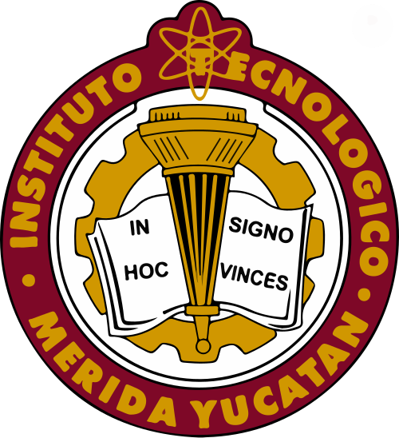
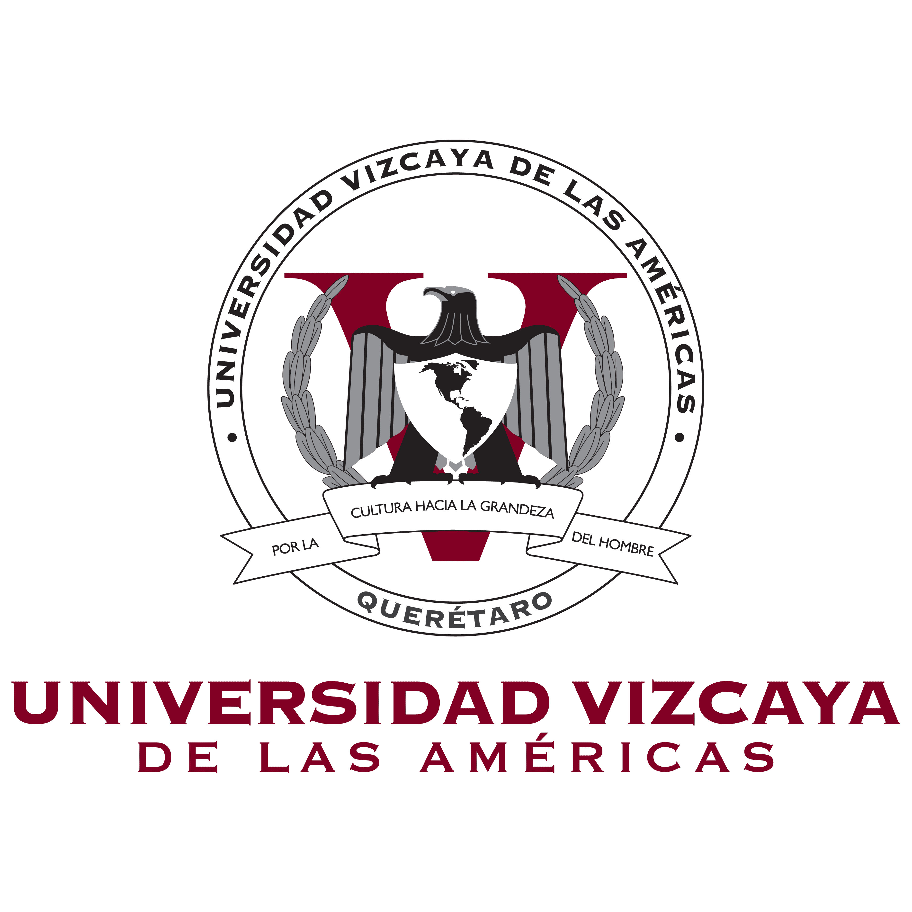
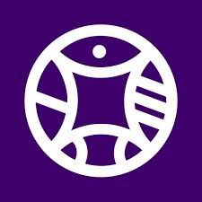

UADY


Ubicación:Calle 61-A x Av. Itzáes, Colonia Centro, Mérida, Yucatán.
Programas:Ciencias de la salud, Ingenierías, Ciencias biológicas y agropecuarias, Ciencias sociales y administrativas, Arquitectura, arte y diseño.
Requisitos:Bachillerato terminado, registrarte en la convocatoria, examen EXANI-II y promedio mínimo.
UVM

Ubicación:Calle 79 número 500, en la colonia Dzityá, Polígono Chuburná, Mérida, Yucatán.
Programas: Ingeniería y tecnología, Negocios, Ciencias de la salud, Diseño, Gastronomía y Derecho..
Requisitos: Certificado de bachillerato, acta de nacimiento, CURP, pago de inscripción.
Tecmilenio


Ubicación: Calle 53 Diagonal No. 665, Colonia Real Montejo, Mérida, Yucatán.
Programas: Preparatoria, carreras profesionales, ejecutivas y maestrías.p>
Requisitos:Certificado de preparatoria, examen de admisión, examen de inglés y documentos personales.
Anáhuac Mayab


Ubicación: Carretera Mérida–Progreso Km. 15.5, Mérida, Yucatán.
Programas:Licenciaturas, Ingenierías, Arquitectura, Negocios, Comunicación y Medicina.
Requisitos: Certificado de preparatoria, acta de nacimiento, CURP, examen y entrevista.
Universidad Modelo


Ubicación:Av. Modesto Méndez No. 196, Colonia Centro, Mérida, Yucatán.
Programas: Licenciaturas, Ingenierías, Arquitectura, Diseño, Derecho y Comunicación.
Requisitos:Certificado de preparatoria, acta de nacimiento, CURP y solicitud de admisión.
Universidad Marista


Ubicación: Periférico Norte, Carretera Mérida–Progreso Km 6.5, Mérida, Yucatán.
Programas: Licenciaturas, Ingenierías, Arquitectura, Psicología, Derecho y Educación.
Requisitos:Certificado de preparatoria, acta de nacimiento, CURP y solicitud de admisión.
Instituto Tecnológico de Mérida


Ubicación: Av. Tecnológico Km 4.5 S/N, Mérida, Yucatán.
Programas: Ingeniería Mecánica, Ingeniería Industrial, Ingeniería en Sistemas Computacionales, Ingeniería Electrónica y Administración.
Requisitos: Certificado de preparatoria, registro en convocatoria, examen de admisión y documentos personales.
Instituto Tecnológico Superior de Progreso


Ubicación:Calle 62 S/N, Colonia Francisco I. Madero, Progreso, Yucatán.
Programas:Ingeniería en Sistemas Computacionales, Ingeniería elctromecanica, Ingeniería en Gestión Empresarial y Tecnologías de la Información.
Requisitos: Certificado de preparatoria, registro en convocatoria, examen de admisión y documentos personales.
Universidad Metropolitana


Ubicación: Calle 67 No. 537 x 68 y 70, Centro, Mérida, Yucatán.
Programas: Derecho, Administración, Contaduría, Psicología, Diseño gráfico y Educación.
Requisitos: Certificado de preparatoria, acta de nacimiento, CURP y solicitud de inscripción.
Universidad Maya


Ubicación:Calle 60 No. 491 x 57 y 59, Centro, Mérida, Yucatán.
Programas:Derecho, Administración, Contaduría, Psicología, Educación y Turismo.
Requisitos: Certificado de preparatoria, acta de nacimiento, CURP y solicitud de inscripción.
Universidad de las Américas


Ubicación: Carretera Mérida–Progreso Km. 12, Mérida, Yucatán.
Programas:Ingenierías, Negocios, Derecho, Diseño, Comunicación y Tecnologías de la información.
Requisitos: Certificado de preparatoria, acta de nacimiento, CURP, proceso de admisión y entrevista.
Universidad Politécnica de Yucatán


Ubicación:Ubicación: Parque Científico Tecnológico de Yucatán, Carretera Sierra Papacal – Chuburná Puerto Km 5.
Programas: académicos: Ingenierías, licenciaturas tecnológicas y posgrados.
Requisitos: Certificado de preparatoria, registro en convocatoria, examen de admisión y documentos personales.